소방설비산업기사(기계) (2015-05-31 기출문제)
1과목: 소방원론
1. 화상의 종류 중 전기화재에 입은 화상으로서 피부가 탄화되는 현상이 발생하였다면 몇 도 화상인가?
- 1도 화상
- 2도 화상
- 3도 화상
- 4도 화상
(정답률: 64%)

2. 청정소화약제(Clean agent)로 볼 수 없는 것은?
- HFC-23
- HFC-227ea
- IG-541
- CF3Br
(정답률: 56%)
3. 피난계획의 일반원칙 중 페일 세이프(fail safe)에 대한 설명으로 옳은 것은?
- 한 가지 피난기구가 고장이 나도 다른 수단을 이용할 수 있도록 고려하는 것
- 피난설비를 반드시 이동식으로 하는 것
- 본능적 상태에서도 쉽게 식별이 가능하도록 그림이나 색채를 이용하는 것
- 피난수단을 조작이 간편한 원시적인 방법으로 설계하는 것
(정답률: 79%)
4. 조리를 하던 중 식용유 화재가 발생하면 신선한 야채를 넣어 소화할 수 있다. 이 소화방법에 해당하는 것은?
- 희석 소화
- 냉각소화
- 부촉매소화
- 질식소화
(정답률: 76%)
5. 화재현장에서 18˚C의 물을 600kg 방사하여 소화하였더니 모두 250˚C의 수증기로 발생되었다. 이 때 소화약제로 작용한 물이 흡수한 총 열량은 얼마인가? (단, 가열된 포화수증기의 비열은 0.6[kcal/kg˚C]이다.)
- 42660 kcal
- 426600 kcal
- 42660 cal
- 426600 cal
(정답률: 57%)
6. 다음 중 전기 화재에 해당하는 것은?
- A급화재
- B급화재
- C급화재
- D급화재
(정답률: 91%)
7. 햇빛에 방치한 기름걸레가 자연발화를 일으켰다. 다음 중 이 때의 원인에 가장 가까운 것은?
- 광합성 작용
- 산화열 축적
- 흡열반응
- 단열압축
(정답률: 84%)
8. 화재 시 고층건물내의 연기 유동 중 굴뚝효과와 관계가 없는 것은?
- 층의 면적
- 건물내외의 온도차
- 화재실의 온도
- 건물의 높이
(정답률: 66%)
9. 식용유 및 지방질유의 화재에 소화력이 가장 높은 분말 소화약제의 주성분은?
- 탄산수소나트륨
- 염화나트륨
- 제1인산암모늄
- 탄산수소칼슘
(정답률: 52%)
10. 전기화재의 발생 원인으로 옳지 않은 것은?
- 누전
- 합선
- 과전류
- 고압전류
(정답률: 76%)
11. 불화단백포소화약제 소화작용의 장점이 아닌 것은?
- 내한용, 초내한용으로 적합하다.
- 포의 유동성이 우수하여 소화속도가 빠르다.
- 유류에 오염이 되지 않으므로 표면하주입식, 포방출방식에 적합하다.
- 내화성이 우수하여 대형의 유류저장탱크 시설에 적합하다.
(정답률: 50%)
12. 다음 중 화재의 위험성과 관계가 없는 것은?
- 산화성물질
- 자기반응성물질
- 금수성물질
- 불연성물질
(정답률: 87%)
13. 물리적 작용에 의한 소화에 해당하지 않는 것은?
- 냉각소화
- 질식소화
- 제거 소화
- 억제소화
(정답률: 80%)
14. 25˚C에서 증기압이 100mmHg 이고 증기밀도(비중)가 2인 인화성액체의 증기-공기밀도는 약 얼마인가? (단, 전압은 760mmHg로 한다.)
- 1.13
- 2.13
- 3.13
- 4.13
(정답률: 47%)
15. Halon 104가 열분해 될 때 발생되는 가스는?
- 포스겐
- 황화수소
- 이산화질소
- 포스핀
(정답률: 68%)
16. 메탄(CH4) 1mol이 완전 연소되는데 필요한 산소는 몇 mol인가?
- 1
- 2
- 3
- 4
(정답률: 75%)
17. 촛불(양초)의 연소형태와 가장 관련이 있는 것은?
- 증발연소
- 분해연소
- 표면연소
- 자기연소
(정답률: 78%)
18. 1 BTU는 몇 cal 인가?
- 212
- 252
- 445
- 539
(정답률: 64%)
19. 가연물에 점화원을 가했을 때 연소가 일어나는 최저 온도를 무엇이라고 하는가?
- 인화점
- 발화점
- 연소점
- 자연발화점
(정답률: 73%)
20. 가연성가스의 연소범위에 대한 설명으로 가장 적합한 것은?
- 가연성가스가 연소되기 위해서 공기 또는 산소와 혼합된 가연성가스의 농도범위로서 하한계 값과 상한계 값을 가진다.
- 가연성가스가 연소 또는 폭발되기 위해서 다른 가연성가스와 혼합되어 일정한 농도를 나타내는 범위를 말한다.
- 가연성가스가 공기중에서 일정한 농도를 형성하여 연소할 수 있도록 한 공기의 농도를 말한다.
- 가연성가스가 공기 또는 산소와 혼합된 가연성가스의 농도범위로서 하한계 값과 상한계 값을 더한 것을 말한다.
(정답률: 69%)
2과목: 소방유체역학
21. 정압비열이 1kJ/kgㆍk인 어떤 이상기체 10kg을 온도 30℃로부터 150℃까지 정압가열 하였다. 이 때의 가열량 [kJ]은?
- 500
- 750
- 900
- 1,200
(정답률: 53%)
22. 그림과 같이 화살표 방향으로 물이 흐르고 있을 때 직경 100mm의 원관에 압력계와 피토관의 지시 바늘이 각각 400kPa과 410kPa을 나타내면 이 관유동에서 유속[m/s]은 얼마인가?
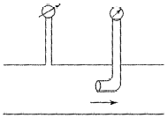
- 4.47
- 3.25
- 2.85
- 2.44
(정답률: 37%)
23. 질량, 길이, 시간을 각각 M, L, T로 표시할 때 밀도의 차원은 다음 중 무엇인가?
- M-1L3
- MLT
- ML-3
- M-1L-2T-2
(정답률: 63%)
24. 펌프의 비속도(ηs)를 구하는 식으로 맞는 것은? (단, Q :유량, η : 회전수, H : 전양정 이다)
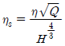
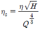
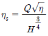
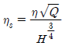
(정답률: 60%)
25. 직경이 각각 100mm, 50mm인 수압계에서 100mm 피스톤을 100N으로 밀면 50mm의 피스톤에 작용하는 힘[N]은 얼마인가?
- 100
- 75
- 50
- 25
(정답률: 41%)
26. 부차적 손실계수가 5인 밸브를 관마찰계수가 0.035이고, 관지름이 3cm인 관으로 환산한다면 관의 상당길이[m]은 얼마인가?
- 4.15
- 4.21
- 4.29
- 4.35
(정답률: 43%)
27. 물체의 체적을 2% 축소 시키는데 필요한 압력[MPa]은? (단, 물의 압축률 값은 4.8×10-10m2/N이다.)
- 32.1
- 41.7
- 45.4
- 52.5
(정답률: 55%)
28. 원형관 층류 유동일 때 관마찰계수는?
- 언제나 레이놀드의 함수이다.
- 마하수와 코시수의 함수이다.
- 상대조도와 오일러수의 함수이다.
- 레이놀드수와 상대조도의 함수이다.
(정답률: 56%)
29. 다음 중 연속방정식이 아닌 것은?
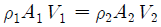
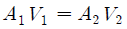
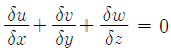
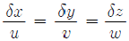
(정답률: 57%)
30. 그림과 같은 경사관 미압계에서 밀폐 용기 속의 물이 표면에 작용하는 게이지 압력은? (단, 물의 비중량은 γ이다.)
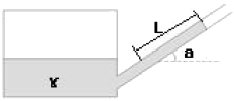
- γLcoaα
- γLsinα
- γLtanα
- γ×L/tanα
(정답률: 64%)
31. 내경 40cm인 관에 유속 0.5m/s로 물이 흐르고 있다면 유량[m3/s]은 얼마인가?
- 0.06
- 0.63
- 1.6
- 16
(정답률: 55%)
32. 지름 5cm인 구가 대류에 의해 열을 외부공기로 방출하며, 이 구는 50W의 전기히터에 의해 내부에서 가열되고 있다. 구 표면과 공기 사이의 온도 차가 50℃라면 공기와 구 사이의 대류 열전달 계수[W/m2ㆍ℃]는 얼마인가?
- 127
- 237
- 347
- 458
(정답률: 26%)
33. 압력이 100kPa abs이고 온도가 55℃인 공기의 밀도 [kg/m3]는 얼마인가? (단, 공기의 기체상수는 287 J/kgㆍK이다.)
- 1.06
- 2.14
- 12.0
- 24.2
(정답률: 48%)
34. 그림과 같은 폭 2m인 수문에서 물의 압력에 의해 A에 걸리는 모멘트[kNㆍm]는?
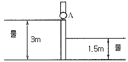
- 22
- 88
- 121
- 231
(정답률: 48%)
35. 옥내소화전 설비에서 노즐구경이 같은 노즐에서 방수압력(계기압력)을 9배로 올리면 방수량은 몇 배로 되는 가?
- √3
- 2
- 3
- 9
(정답률: 66%)
36. 다음 그림에서 h = 3m일 때 지름 60mm인 오리피스를 통해 유출되는 물의 유량[m3/s]은?
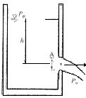
- 0.0217
- 0.217
- 5.374
- 9.266
(정답률: 58%)
37. 20℃, 101.3kPa 압력하에서 공기의 밀도[kg/m3]는? (단, 공기의 기체상수는 R = 286.8J /kgㆍk이다.)
- 1.08
- 1.20
- 1.38
- 1.29
(정답률: 56%)
38. 그림과 같은 차 위에 물탱크와 펌프가 장치되어 펌프 끝의 지름 5cm의 노즐에서 매초 0.09m3의 물이 수평으로 분출된다고 하면 그 추력[N]은 얼마인가?
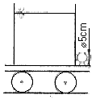
- 4125
- 2079
- 412
- 212
(정답률: 52%)
39. 특별피난계단의 제연설비를 위해 송풍기를 설치하고자 한다. 송풍기 풍량이 408 m3/min이고, 전압이 441N/m2 일 때 필요한 전동기 출력[kW]은 얼마인가? (단, 송풍기의 전압효율은 75%이고, 전동효율 및 여유율은 무시한다.)
- 1
- 2
- 3
- 4
(정답률: 33%)
40. 매 시간당 30 ㎏의 건포화증기를 포화수로 응축시키는 응축기가 있다. 이 응축기에 공급되는 냉각수의 온도는 15℃이고, 유량은 1,000 L/h 이다. 응축기 출구의 냉각수 온도[℃]는 얼마가 되겠는가? (단, 냉각수의 비열은 4.2 kJ/kg℃, 수증기의 응축잠열은 약 2,520 kJ/kg℃이다)
- 30
- 33
- 36
- 39
(정답률: 48%)
3과목: 소방관계법규
41. 위험물안전관리법상 제1류 위험물에 해당하는 것은?
- 황화린
- 질산염류
- 마그네슘
- 알킬알루미늄
(정답률: 75%)
42. 위험물 중 기어유, 실린더유 그 밖에 1기압에서 인화점이 200℃ 이상 250℃ 미만의 인화성 액체는 어디에 해당되는가?
- 제1석유류
- 제2석유류
- 제3석유류
- 제4석유류
(정답률: 46%)
43. 비상경보설비를 설치하여야 할 특정 소방대상물이 아닌 것은?
- 연면적 400 m2 이상이거나 지하층 또는 무창층의 바닥면적이 150 m2 이상인 것
- 지하층에 위치한 바닥면적 100 m2인 공연장
- 지하가 중 터널로서 길이가 500 m 이상인 것
- 30인 이상의 근로자가 작업하는 옥내 작업장
(정답률: 62%)
44. 소방기본법에 의한 한국소방안전협회의 업무 감독권한은 누구에게 있는가? (법 개정으로 지문 수정, 2017.7.26.)
- 시ㆍ도지사
- 소방청장
- 소방본부장
- 관할 소방서장
(정답률: 57%)
45. 소방본부장 또는 소방서장이 소방특별조사를 하고자 하는 때에는 관계인에게 며칠 전에 서면으로 알려야 하는 가?
- 1일
- 3일
- 5일
- 7일
(정답률: 74%)
46. 소방시설관리업의 보조 기술인력으로 등록할 수 없는 자는?
- 소방설비기사
- 소방안전관리자
- 소방설비산업기사
- 소방공무원 3년 이상 근무 경력자로 소방시설 인정자격 수첩을 교부 받은 자
(정답률: 68%)
47. 소방시설의 하자보수 보증기간이 3년인 것은?
- 피난기구
- 옥내소화전설비
- 무선통신보조설비
- 비상방송설비
(정답률: 68%)
48. 소방용수시설의 저수조 설치기준으로 틀린 것은?
- 흡수에 지장이 없도록 토사 및 쓰레기 등을 제거할 수 있는 설비를 갖출 것
- 흡수부분의 수심이 0.5 m 이상일 것
- 흡수관의 투입구가 사각형의 경우에는 한 변의 길이가 60 cm 이상일 것
- 저수조에 물을 공급하는 방법은 상수도에 연결하여 수동으로 급수되는 구조일 것
(정답률: 69%)
49. 소방서장의 소방대상물 개수ㆍ이전ㆍ제거 등의 명령에 따른 손실보상 의무자는?
- 국무총리
- 시ㆍ도지사
- 소방서장
- 구청장
(정답률: 85%)
50. 소화활동설비에 해당하지 않는 것은?
- 제연설비
- 비상콘센트설비
- 연결송수관설비
- 자동화재속보설비
(정답률: 56%)
51. 위험물의 저장 또는 취급에 관한 세부기준을 위반한 자에 대한 과태료 금액으로 옳은 것은?
- 1차 위반 시 : 50만원
- 2차 위반 시 : 70만원
- 3차 위반 시 : 100만원
- 4차 위반 시 : 150만원
(정답률: 67%)
52. 소방안전관리대상물의 관계인이 소방안전관리자를 선임한 경우에는 선임한 날부터 며칠 이내에 누구에게 신고해야 하는가?
- 7일, 시ㆍ도지사
- 14일, 시ㆍ도지사
- 7일, 소방본부장이나 소방서장
- 14일, 소방본부장이나 소방서장
(정답률: 55%)
53. 시ㆍ도지사는 이웃하는 다른 시ㆍ도시자와 소방업무에 관하여 상호응원협정을 체결한다. 상호응원협정 체결 시 포함되어야 하는 사항으로 틀린 것은?
- 소요경비의 부담에 관한 사항
- 응원출동 대상지역 및 규모
- 화재의 예방에 관한 사항
- 응원출동 훈련 및 평가
(정답률: 59%)
54. 소방용품에 해당하지 않는 것은?
- 방염액
- 완강기
- 가스누설경보기
- 경보시설 중 음량조절장치
(정답률: 46%)
55. 방염성능기준 이상의 실내장식물 등을 설치하여야 하는 특정소방대상물이 아닌 것은?
- 방송국
- 종합병원
- 11층 이상의 아파트
- 숙박이 가능한 수련시설
(정답률: 76%)
56. 소방용수시설의 저수조는 지면으로부터 낙차가 몇 m 이하로 설치하여야 하는가?
- 0.5
- 1.7
- 4.5
- 5.5
(정답률: 72%)
57. 비상방송설비를 설치하여야 하는 특정소방대상물의 기준으로 틀린 것은?
- 지하층의 층수가 3층 이상인 것
- 지하층을 제외한 층수가 11층 이상인 것
- 연면적 3,500 m2 이상인 것
- 건축물 내부에 설치된 차고 또는 주차장으로 바닥면적 200 m2 이상인 것
(정답률: 43%)
58. 소방장비 등에 대한 국고보조 대상사업의 범위와 기준 보조율은 무엇으로 정하는가?
- 총리령
- 대통령령
- 국민안전처령
- 시ㆍ도의 조례
(정답률: 53%)
59. 숙박시설 외의 특정소방대상물로서 강의실, 상담실의 용도로 사용하는 바닥면적이 190 m2일 때 법정 수용인원은?
- 80명
- 90명
- 100명
- 110명
(정답률: 53%)
60. 종합정밀점검을 실시하여야 하는 아파트의 기준으로 옳은 것은?
- 연면적 2000 m2 이상이고 11층 이상일 것
- 연면적 2000 m2 이상이고 16층 이상일 것
- 연면적 5000 m2 이상이고 11층 이상일 것
- 연면적 5000 m2 이상이고 16층 이상일 것
(정답률: 46%)
4과목: 소방기계시설의 구조 및 원리
61. 전역방출방식 분말소화설비의 분사헤드는 소화약제 저장량을 몇 초 이내에 방사할 수 있는 것으로 하여야 하는가?
- 5
- 10
- 20
- 30
(정답률: 55%)
62. 제연설비를 설치하기 위해서는 하나의 제연구역의 면적은 몇 m2 이내로 하여야 하는가?
- 1000
- 1500
- 2000
- 2500
(정답률: 62%)
63. 주차장 물분무소화설비의 수원량 기준으로 다음 중 옳은 것은?
- 10 L/min × 20 분 × 바닥면적(최소 50 m2)
- 12 L/min × 20 분 × 바닥면적(최소 50 m2)
- 15 L/min × 20 분 × 바닥면적(최소 50 m2)
- 20 L/min × 20 분 × 바닥면적(최소 50 m2)
(정답률: 64%)
64. 노유자시설로 사용되는 층의 바닥면적이 몇(m2) 마다 1개 이상의 피난기구를 설치해야 하는가?
- 300
- 500
- 800
- 1000
(정답률: 65%)
65. 예상제연구역에 공기가 유입되는 순간의 풍속은 몇 m/s 이하인가?
- 10
- 5
- 2
- 0.5
(정답률: 60%)
66. 분말소화설비의 화재안전기준에서 분말소화약제의 저장용기를 가압식으로 설치할 때 안전밸브의 작동압력은?
- 최고사용압력의 0.8배 이하
- 최고사용압력의 1.8배 이하
- 내압시험압력의 0.8배 이하
- 내압시험압력의 1.8배 이하
(정답률: 77%)
67. 소화기의 소화능력시험에 관한 기준으로 옳은 것은?
- A급 화재용 소화기의 소화능력 시험은 중유를 대상으로 한다.
- B급 화재용 소화기의 소화능력 시험에서 소화는 모형에 불을 붙인 다음 30 초 후에 시작한다.
- C급 화재용 소화기의 전기전도성은 소화약제 방사 시 통전전류가 0.25 mA 이하 이어야 한다.
- 소화는 무풍상태와 사용상태에서 실시한다.
(정답률: 55%)
68. 스프링클러설비의 수평주행배관에서 연결된 교차배관의 총 길이가 18 m 이다. 배관에 설치되는 행가의 최소설치수량으로 옳은 것은?
- 1개
- 2개
- 3개
- 4개
(정답률: 60%)
69. 물 및 포 소화설비 헤드 또는 노즐 중 선단에서의 방수 압력이 가장 높아야 하는 것은?
- 옥내소화전의 노즐
- 스프링클러 헤드
- 옥외소화전의 노즐
- 위험물 옥외 저장탱크 보조 포소화전의 노즐
(정답률: 47%)
70. 포소화설비의 화재안전기준에서 포소화설비설치 소방 대상물로서 가장 부적합한 것은?
- 특수가연물을 저장ㆍ취급하는 장소
- 비행기 격납고
- 알칼리 금속 저장 창고
- 차고 또는 주차장
(정답률: 57%)
71. 상수도 소화전의 호칭지름 100 mm 이상을 연결할 수 있는 상수도 배관의 호칭지름은 몇 mm 이상 이어야 하는가?
- 50
- 75
- 80
- 100
(정답률: 74%)
72. 피난기구인 완강기의 기술기준 중 최대 사용하중은 몇 N 이상인가?(오류 신고가 접수된 문제입니다. 반드시 정답과 해설을 확인하시기 바랍니다.)
- 800
- 1000
- 1200
- 1500
(정답률: 10%)
73. 개방형 헤드를 사용하는 연결살수설비에 있어서 하나의 송수구역에 설치하는 살수헤드의 최대 개수는?
- 3
- 5
- 8
- 10
(정답률: 57%)
74. 이산화탄소 소화설비의 배관 사용 기준에서 다음 중부적합한 것은?
- 압력배관용탄소강관 중 고압식은 스케줄 80 이상으로 한다.
- 압력배관용탄소강관 중 저압식은 스케줄 40 이상으로 한다.
- 동관 중 고압식은 12.5 MPa 이상 압력에 견딜 수 있는 것으로 한다.
- 동관 중 저압식은 3.75 MPa 이상 압력에 견딜 수 있는 것으로 한다.
(정답률: 56%)
75. 옥내소화전설비에 대한 설명으로 틀린 것은?(관련 규정 개정전 문제로 여기서는 기존 정답인 4번을 누르면 정답 처리됩니다. 자세한 내용은 해설을 참고하세요.)
- 옥내소화전설비의 전용 수원의 최대 확보량은 50층 이상일 경우에 39 세제곱미터 이상이 되어야 한다.
- 옥내소화전설비의 전용 가압송수장치의 최대 토출량은 최소한 분당 650 리터 이상은 되어야 한다.
- 기동용 수압개폐장치를 사용할 경우 그 용적이 100 리터 이상이 되어야 한다.
- 옥내소화전설비에 비상전원을 설치하여야 할 특정소방대상물은 층수가 7층 이상으로서 연면적이 1500 m2 이상이 되어야 한다.
(정답률: 44%)
76. 팽창질석 160 L 이상의 것 1포와 삽이 있는 경우 능력단위는?
- 0.5
- 0.8
- 1.0
- 1.2
(정답률: 59%)
77. 전역방출식의 할로겐화합물 소화설비공사가 완료되었을 때 소방감리자의 점검내용 중 옳지 않은 것은?
- 약제저장실은 방화구획 되어 있었고, 건축도면에서 출입문을 검토하니 갑종방화문으로 되어 있었다.
- 저장용기의 간격이 3 cm 이상으로 되어 있었다.
- 설계계산서를 확인하니, 설계기준저장량이 30 초 이내에 방사할 수 있도록 되어 있었다.
- 기동장치는 바닥에서 높이 1.2 m 위치에 설치되어 있었다.
(정답률: 47%)
78. 물분무소화설비의 물분무헤드 설치제외 조건 중 기계장치 등 운전시에 표면의 온도가 몇(℃) 이상일 때 물분무 헤드의 설치 제외가 가능한가?
- 250
- 260
- 270
- 280
(정답률: 72%)
79. 폐쇄형 스프링클러헤드를 사용하는 연결살수설비의 주 배관이 접속할 수 없는 것은?
- 옥내소화전설비의 주배관
- 옥외소화전설비의 주배관
- 수도배관
- 옥상수조
(정답률: 53%)
80. 연소할 우려가 있는 개구부에 드렌처설비를 설치할 경우, 해당 개구부에 한하여 스프링클러 헤드를 설치하지 아니할 수 있는 조건으로 틀린 것은?
- 드렌처헤드는 개구부 위 측에 2.0 m 이내마다 1개를 설치할 것
- 제어밸브는 특정소방대상물 층마다 설치할 것
- 수원의 수량은 드렌처헤드가 가장 많이 설치된 제어밸브의 드렌처헤드의 설치개수에 1.6 m3를 곱하여 얻은 수치 이상이 되도록 할 것
- 수원에 연결하는 가압송수장치는 점검이 쉽고 화재 등의 재해로 인한 피해우려가 없는 장소에 설치할 것
(정답률: 47%)